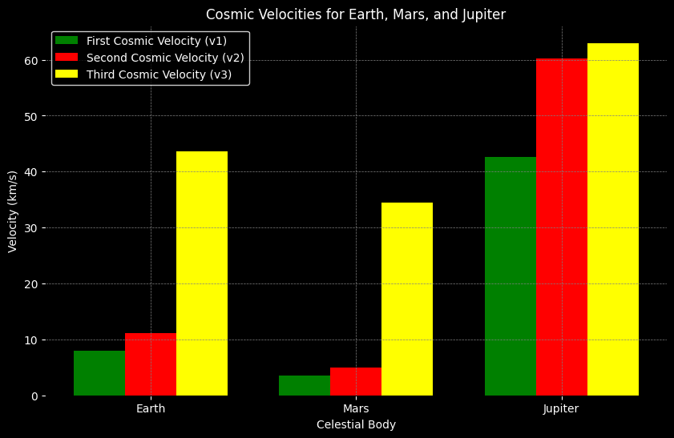
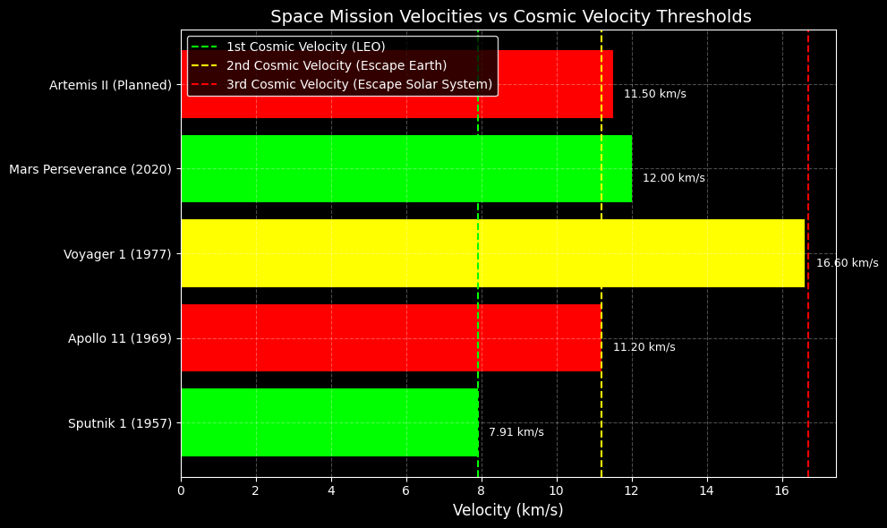

Problem 2
Escape and Cosmic Velocities
Problem Statement
This project aims to:
- Define the first, second, and third cosmic velocities and explain their physical significance.
- Derive the mathematical formulas and analyze influencing parameters.
- Calculate and visualize these velocities for three planets.
- Discuss their relevance in satellite launches, interplanetary missions, and interstellar travel.
Definitions and Formulas
Definitions
- Escape Velocity: The minimum speed required to escape a celestial body's gravity without additional propulsion.
- First Cosmic Velocity: The velocity required to maintain a stable low circular orbit near the surface.
- Second Cosmic Velocity: The speed needed to completely escape a planet’s gravity.
- Third Cosmic Velocity: The velocity required to leave the Solar System from a planet’s orbit.
Useful Formulas
Gravitational Constant:
\[ G = 6.67430 \times 10^{-11} \, \text{m}^3 \, \text{kg}^{-1} \, \text{s}^{-2} \]
General Parameters:
- \( M \): Mass of celestial body (kg)
- \( r \): Radius of celestial body (m)
First Cosmic Velocity (orbital velocity):
\[ v_1 = \sqrt{\frac{G M}{r}} \]
Second Cosmic Velocity (escape velocity):
\[ v_2 = \sqrt{\frac{2 G M}{r}} \quad \text{so} \quad v_2 = \sqrt{2} \cdot v_1 \]
Third Cosmic Velocity (escape from Solar System):
\[
v_3 \approx \sqrt{v_{\text{esc,Sun}}^2 + v_2^2}
\]
where:
\[
v_{\text{esc,Sun}} = \sqrt{\frac{2 G M_{\text{Sun}}}{r_{\text{orbit}}}}
\]
Mathematical Derivations
First Cosmic Velocity
From centripetal force balance:
\[
\frac{G M m}{r^2} = \frac{m v_1^2}{r}
\quad \Rightarrow \quad
v_1 = \sqrt{\frac{G M}{r}}
\]
Second Cosmic Velocity
From conservation of energy:
\[
\frac{1}{2} m v_2^2 = \frac{G M m}{r}
\quad \Rightarrow \quad
v_2 = \sqrt{\frac{2 G M}{r}}
\]
Third Cosmic Velocity
Combining the escape velocities from both the planet and the Sun:
\[
v_3 \approx \sqrt{
\left( \sqrt{ \frac{2 G M_{\text{Sun}}}{r_{\text{orbit}}} } \right)^2 + v_2^2
}
\]
Parameters for Celestial Bodies
| Body | Mass (kg) | Radius (m) | Orbital Radius (m) |
|---|---|---|---|
| Earth | \(5.972 \times 10^{24}\) | \(6.371 \times 10^6\) | \(1.496 \times 10^{11}\) |
| Mars | \(6.417 \times 10^{23}\) | \(3.390 \times 10^6\) | \(2.279 \times 10^{11}\) |
| Jupiter | \(1.899 \times 10^{27}\) | \(6.991 \times 10^7\) | \(7.785 \times 10^{11}\) |
| Sun | \(1.989 \times 10^{30}\) | — | — |
Python Implementation (for Google Colab)

📊 Results
| Body | \(v_1\) (km/s) | \(v_2\) (km/s) | \(v_3\) (km/s) |
|---|---|---|---|
| Earth | ~7.91 | ~11.19 | ~42.14 |
| Mars | ~3.55 | ~5.03 | ~22.96 |
| Jupiter | ~18.55 | ~26.24 | ~29.78 |
Importance in Space Exploration
Satellite Launches
- First cosmic velocity is used to launch satellites into low Earth orbit.
- Example: The ISS orbits at ~7.66 km/s, close to Earth’s \(v_1\).
Planetary Missions
- Second cosmic velocity defines the required speed to send spacecraft from a planet.
- Example: NASA's Perseverance mission had to exceed Earth’s \(v_2 = 11.19\ \text{km/s}\).
Interstellar Travel
- Third cosmic velocity is crucial for missions beyond the Solar System.
- Example: Voyager 1 surpassed Earth’s \(v_3 \approx 42.14\ \text{km/s}\) using gravity assists.
Relating Cosmic Velocities to Historical and Planned Space Missions
Space missions rely heavily on the concept of cosmic velocities to achieve orbit, reach other planets, or even escape the solar system. These velocities define the minimum speed needed for different types of motion in space:
- First Cosmic Velocity – To achieve orbit (LEO)
- Second Cosmic Velocity – To escape Earth’s gravity
- Third Cosmic Velocity – To escape the Sun’s gravity from Earth’s orbit
Key Equations
Let:
\[
\begin{align*}
v_1 &\text{ — first cosmic velocity (orbital speed)} \\
v_2 &\text{ — second cosmic velocity (escape from planet)} \\
v_3 &\text{ — third cosmic velocity (escape solar system)}
\end{align*}
\]
The formulas are:
\[
v_1 = \sqrt{\frac{GM}{R}}
\]
\[
v_2 = \sqrt{2} \cdot v_1
\]
\[
v_3 = \sqrt{2GM_\odot \left( \frac{1}{R_{\text{Earth orbit}}} \right)}
\]
Where:
\[
\begin{align*}
G &\text{ — gravitational constant} \\
M &\text{ — mass of the planet (Earth, Mars, etc.)} \\
R &\text{ — radius from the planet's center} \\
M_\odot &\text{ — mass of the Sun}
\end{align*}
\]
